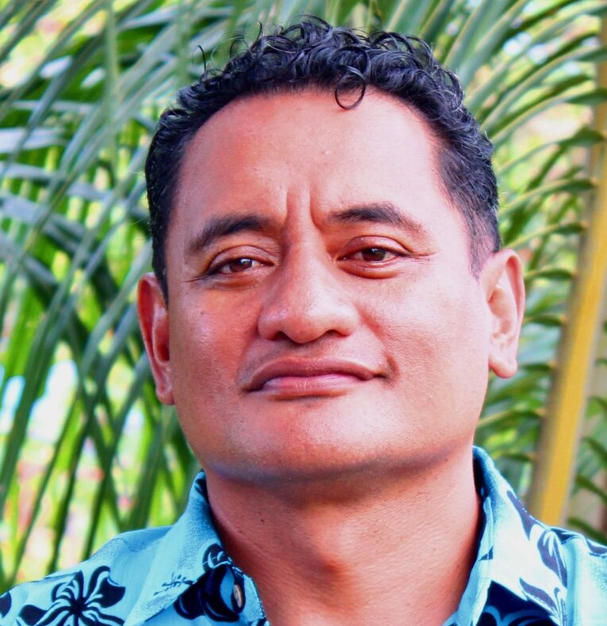
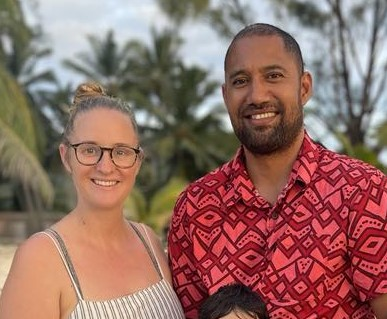
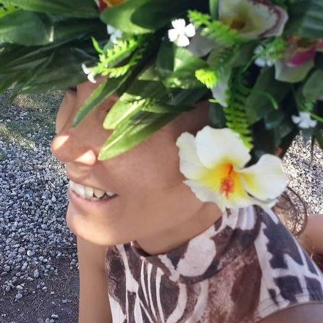

This collective values the strength of close-knit family ties and robust community support. Members believe that collaboration and mutual care are foundational for achieving lasting social impact, sharing a commitment to nurturing relationships, empowering one another, and building networks of trust.
Members in this group are guided by strong spiritual principles, a deep sense of faith, and ethical leadership. They value inspiration, prayer, and integrity in their personal lives and leadership roles, creating a moral compass that informs their collaborations and community initiatives.

Integrity & Honesty
This theme reflects a steadfast commitment to ethical conduct, transparency, and personal accountability. Members believe that honest communication and integrity are crucial for trustworthy collaborations, ensuring that all partnerships are built on mutual respect and reliability.
Health & Well-being
A commitment to physical, mental, and emotional health binds this group together. They promote holistic wellness through sustainable practices, active lifestyles, and initiatives that enhance both individual and community well-being.

Sustainability & Innovation
This group champions creative problem-solving and eco-friendly solutions. They embrace cutting-edge technologies and innovative practices that support regenerative agriculture, environmental stewardship, and a forward-thinking approach to sustainable development.

Empowerment & Leadership
Focused on driving change and inspiring others, this group values visionary leadership and community empowerment. Their commitment to mentoring, advocacy, and inclusive growth paves the way for transformative collaborations that empower the next generation.
Shared Vision
Youth Empowerment & Education
This vision emphasizes nurturing the next generation through robust educational programs, capacity building, and leadership development. It reflects a collective drive to create pathways for young people, equipping them with the skills and confidence to shape a brighter future.
Sustainable Community & Agriculture
This vision is dedicated to building resilient local communities through regenerative farming, organic practices, and food security initiatives. It emphasizes the importance of blending traditional agricultural wisdom with innovative practices to ensure environmental sustainability and community self-sufficiency.
Cultural Heritage & Traditional Knowledge
This vision focuses on preserving indigenous wisdom, celebrating cultural heritage, and passing on traditional practices to future generations. The group is united by a passion for the arts, storytelling, and maintaining a deep connection to their ancestral roots.
Innovation & Technology
This vision embraces the use of cutting-edge technology and creative thinking to solve pressing problems. The focus is on integrating digital tools, smart solutions, and innovative practices to drive social impact and sustainable development.
Empowerment & Leadership
Focused on inspiring action and fostering strong leadership, this vision is about driving change from within. It emphasizes mentorship, accountability, and the creation of environments where every individual has the opportunity to lead and contribute meaningfully.
Shared Vehicles
Educational & Mentorship Platforms
These vehicles include academies, digital learning tools, and mentorship programs that provide education, training, and capacity building. They enable members to share knowledge, foster innovation, and empower the next generation of leaders.
Agricultural & Environmental Initiatives
These initiatives focus on regenerative farming, organic production, and sustainable food systems. They drive community resilience through environmentally friendly practices and innovative agricultural solutions that support food security and ecological balance.
Cultural & Arts Promotion
These vehicles promote art, heritage, and creative expression. They support cultural institutions and artistic endeavors that preserve traditional knowledge, inspire innovation, and foster a strong sense of identity within the community.
Business & Investment Ventures
Focused on economic development and entrepreneurship, this category includes consultancy, investment, and business management initiatives. These vehicles drive growth, create sustainable enterprises, and foster innovation through strategic partnerships and financial support.
Community Service & Outreach
These vehicles emphasize social inclusion, direct community support, and grassroots outreach. They include programs and initiatives designed to improve quality of life, offer mentorship, and create resilient, empowered communities through active civic engagement.